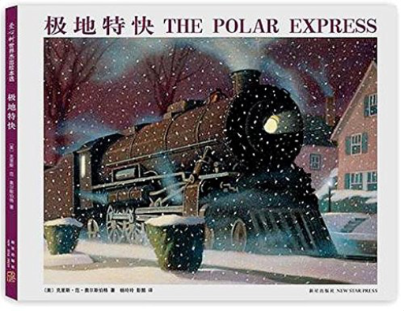 极地特快克里斯·范·奥尔斯伯格  世界上到底有没有圣诞老人？我相信有。许多年前的一个平安夜，“极地特快”停在了我家的门口，把我带上了去往北极的旅途。在那儿，我见到了圣诞老人，还收到了他送出的第一份圣诞礼物——雪橇上的银铃…… 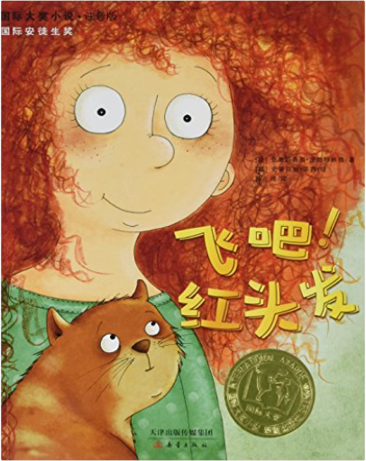 飞吧红头发(注音版)/国际大奖小说克里斯蒂娜·涅斯特林格 女孩弗里德里克和安娜姑妈，以及一只名字叫作“大猫”的猫一起生活。她有一头火红的头发，为此总是受到孩子们的嘲笑和捉弄。有一天，弗里德里克从姑妈口中得知这一头红发原来是具有魔力的，然而，这仍旧无法保护弗里德里克不被大家欺负。邮递员布鲁克**同情她，但除了每天上下学接送她以外也无计可施。后来，弗里德里克在家中发现了一本神秘的红皮书，书上有密码一般的符号，还夹着一封父亲留下的信。弗里德里克、姑妈、大猫和邮递员夫妇想方设法破解了红皮书的秘密，原来，他们可以通过飞行前往一个没有人被嘲笑、大家都互相帮助的国家去…… 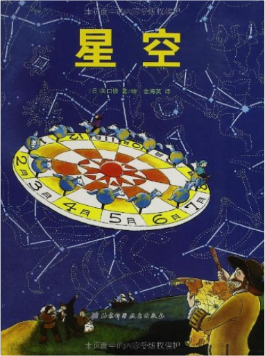 星空关口修 《星空》中的星图是在约翰·波德的《波德星图》的基础上简化而成的，星图里大熊的尾巴比真熊的尾巴长。在满天星斗下，想想天文学中的宇宙体系，再想想那些神话和传说故事，是一件多么惬意的事啊！希望此书能带领大家踏上探索星空的道路。 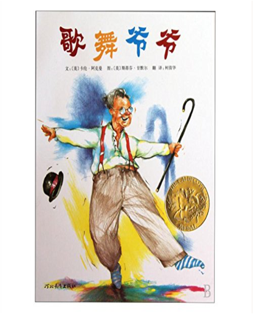 歌舞爷爷卡伦·阿克曼 《歌舞爷爷》内容简介：歌舞爷爷不仅带领我们熟悉了那个属于歌舞的年代，也同时在故事中透露出对孩子和家庭的爱。这本图画书适合全家人一起慢慢赏读。曾经是歌舞艺人的爷爷一天突然带着孩子们上了阁楼，找出了收藏已久的跳舞的服装和道具，重温了那个美好的时代。作者和画者共同营造的一个温暖、有趣的故事，带我们一起回味往日的时光…… 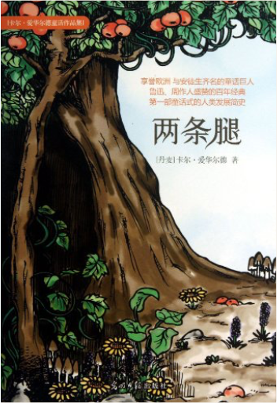 卡尔•爱华尔德童话作品集:两条腿卡尔•爱华尔德 《两条腿》是一部以科学童话童话的形式记述的人类发展简史。第一部分从一对“两条腿”夫妇一无所有地来到森林开始，叙述了他们如何通过智慧和勇气生存下来，如何采取手段逐渐征服其它动物，如何学会了蓄养牲畜和种植对自己有用的植物，如何挫败狮子的威胁，并继之成为森林之王；第二部分则主要从一只关在笼子里供人参观的狮子的角度出发，借着狗与狮子之间的对话，对文明社会中人、自然、社会之间的关系做了启发式的思考。 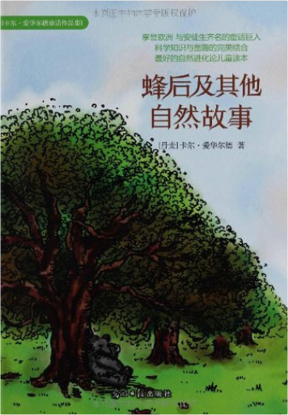 卡尔•爱华尔德童话作品集:蜂后及其他自然故事卡尔•爱华尔德 《蜂后及其他自然故事》包括七篇独立的童话故事，以拟人手法描绘了一幅自然界动植物们生息繁衍的画卷，书中穿插了许多自然科学常识，同时通过这些常识讲述物种起源、生存竞争的生态规律，令人深思，予人警醒。 | 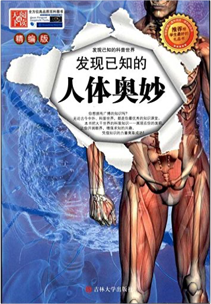 发现已知的人体奥妙吴永谦 《发现已知的人体奥秘(精编版)》人类的身体是自然界最伟大的创造之一，它就像一台复杂而神奇的机器，各个系统日夜不停地工作着，维持着人的生命、感情和思维。可是，每个人的身体中都隐藏着秘密，有哪些秘密呢？《发现已知的人体奥秘(精编版)》以生动活泼、浅显易懂的语言向读者讲解了它们最好奇的人体知识，让读者看得一目了然，津津有味！ 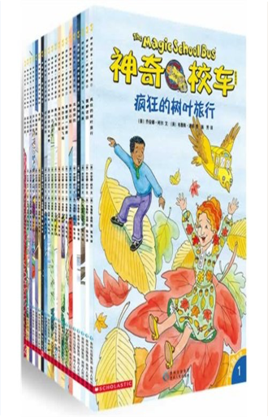 神奇校车·桥梁书版（套装共20册）——美国Scholastic学子出版社金牌畅销系列，继续打造神奇校车的科学冒险之旅！全新内容，全新体验，小神校迷不可错过的独立阅读读本乔安娜柯尔 著 布鲁斯迪根 图 施芳 译 B00K7SSAZC 蒲蒲兰绘本馆•身体与心灵绘本系列:乳房的故事土屋麻由美 你的孩子是不是曾对妈妈的乳房产生过好奇？他（她）是不是有时会想要摸摸妈妈的乳房，或是问过“妈妈的胸部为什么比爸爸的大？”“妈妈的乳房里还有牛奶吗？”之类的问题，而令你觉得尴尬、不知该怎样应对呢？ 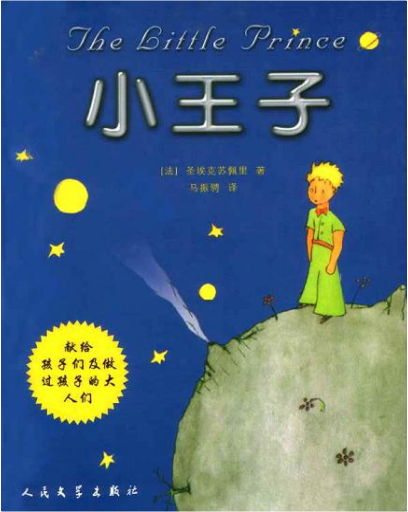 小王子圣埃克絮佩里 (Saint-Exupery) 温馨提示：两种封面随机发货 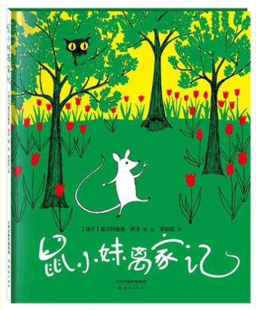 鼠小妹离家记威尔特鲁德·罗泽 《鼠小妹离家记》讲述了鼠小妹和爸爸妈妈住在花园的一棵苹果树下。他们每天都能在花园里找到蔬菜吃。这一天，鼠婶婶来到鼠小妹的家做客，告诉她花园外面的大房子里不仅有蔬菜吃，还有牛奶，面包，火腿等诱人的东西。鼠小妹告别了爸爸妈妈，离开了自己的家，迫不及待地去大房子里闯荡一番。可是大房子里不仅有牛奶和乳络，还有一只猫和一个捕鼠器！鼠小妹被捕鼠器夹住了，最后她能否得救呢？让我们一起来重读经典。 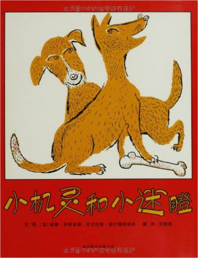 启发精选美国凯迪克大奖绘本:小机灵与小迷瞪威廉•利普金德, 尼古拉斯•莫尔德维诺夫 《启发精选美国凯迪克大奖绘本:小机灵与小迷瞪》是我社出版的启发精选凯迪克大奖绘本系列之一，适合3岁以上儿童阅读。两只小黄狗小机灵和小迷瞪在院子里找东西吃，不停地挖啊挖，终于找到了一根骨头。可是骨头到底该归谁呢？他们问了农夫，农夫只关心马车；问了山羊，山羊只想着吃草；问了小剃头匠，他只为了试试手艺……一路上，他们帮了别人做了很多事，可骨头的事依旧没有解决。直到一只大狗的到来，抢了骨头，他们决定打退敌人，共同拥有这根骨头。问题终于迎刃而解了，原来分享就是最好的方法。一本向读者展现最童真画面，体会分享的可贵与快乐的绘本。 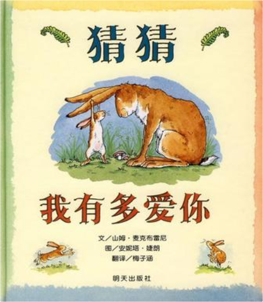 信谊世界精选图画书:猜猜我有多爱你山姆•麦克布雷尼 《信谊世界精选图画书:猜猜我有多爱你》内容简介：一大一小两只兔子短短的对话，浓缩生命中最复杂、也是最伟大的情感。小兔子认真地向大兔子表达“我爱你”，并用各种身体动作和看得见的静物表达自己对大兔子的爱。但不管怎么比，永远也比不过大兔子来得多、来得高、来得远。最后，小兔子终于在一片酽酽爱意的包裹下睡去了。 |
 Made with Delicious Library
Made with Delicious Library